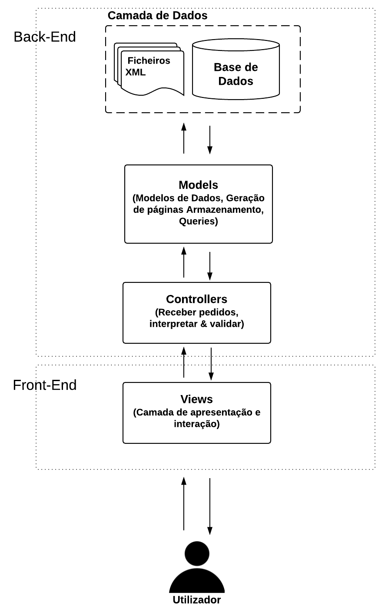
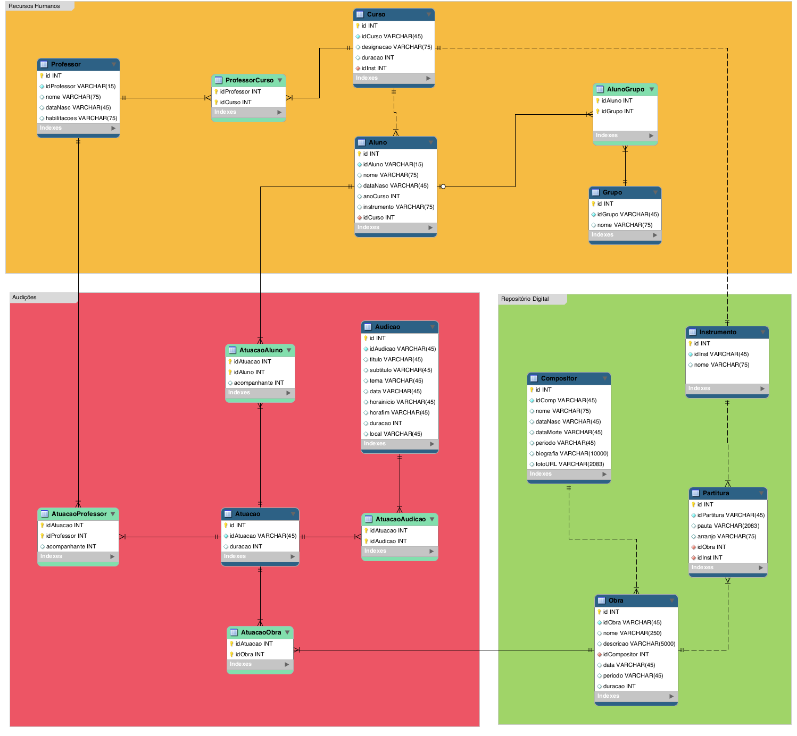
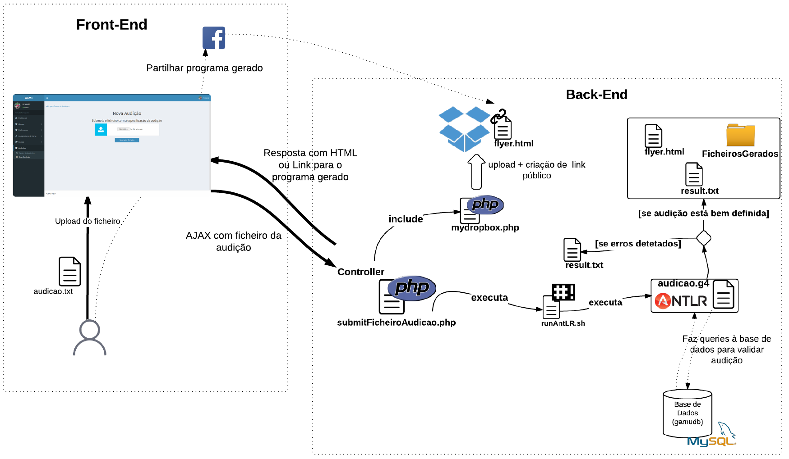
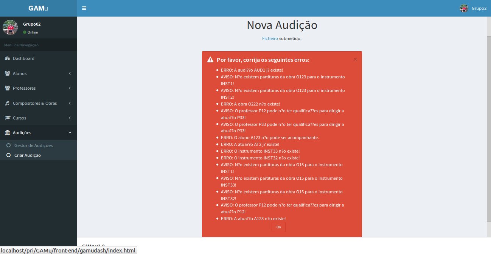
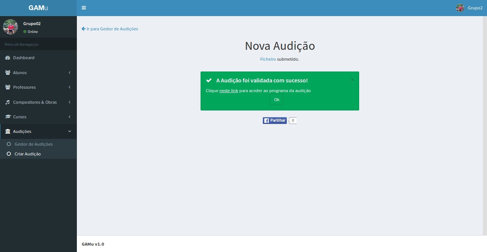
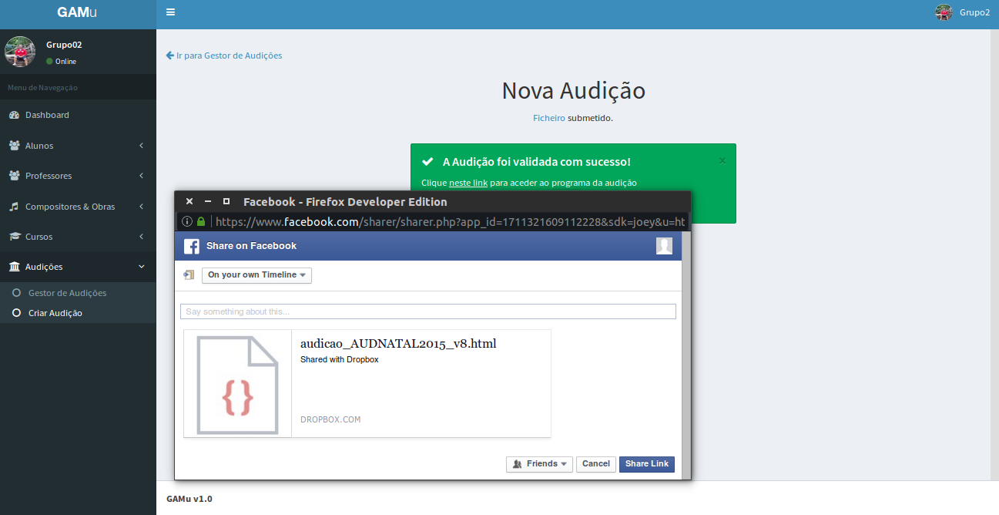
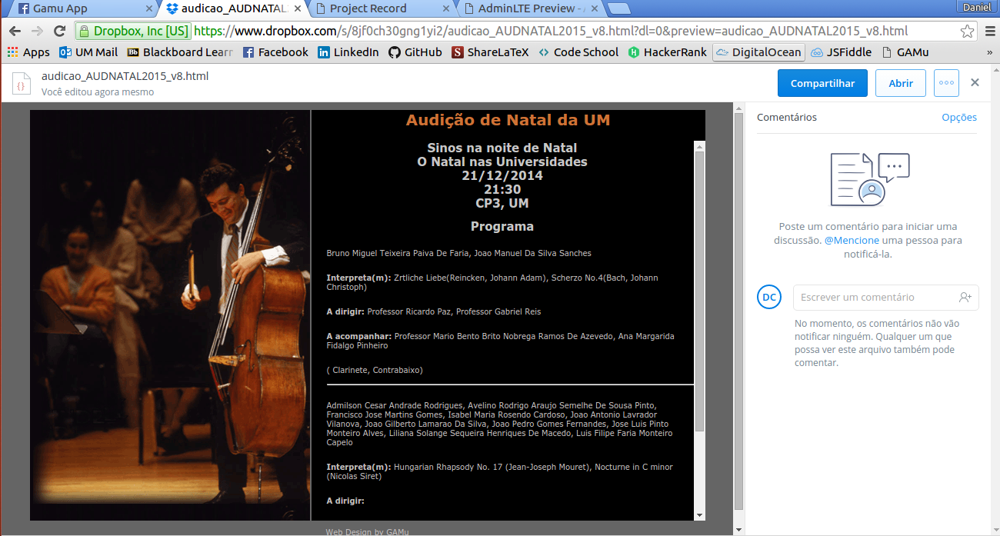
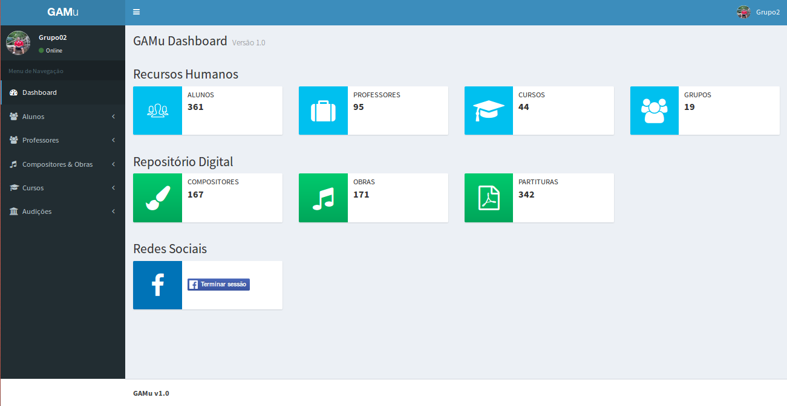
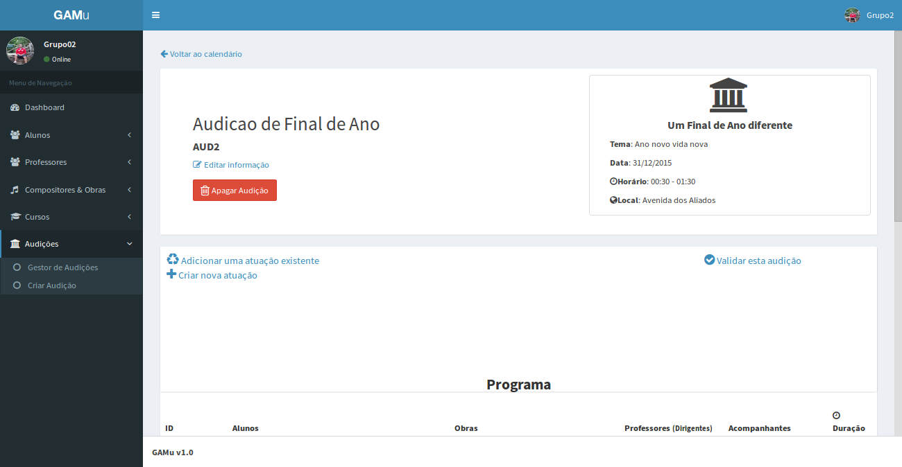
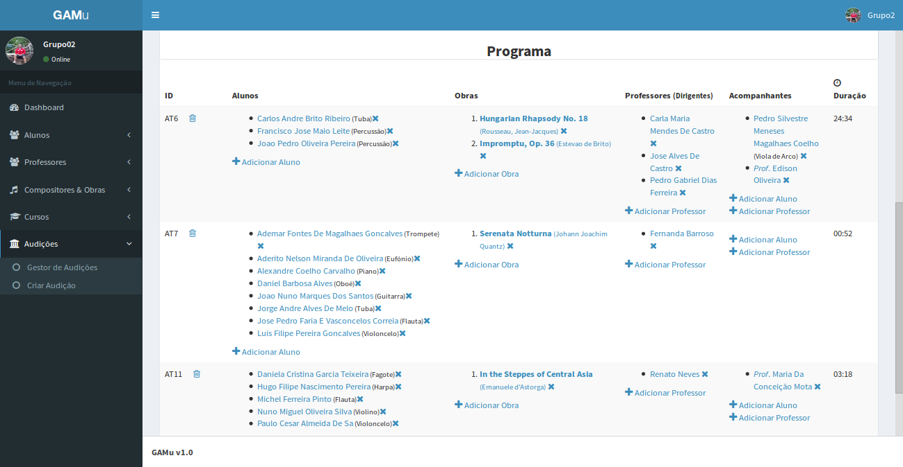

Project Record
Projeto Final (1º Semestre - Perfil de PLC::MIEI/MEI::2015/2016)
Work Team
Abstract
Foi proposto ao grupo de alunos do perfil de Processamento de Linguagens que num contexto de uma aplicação de gestão de uma escola de música se criasse uma microaplicação de geração automática de programas de audições. No entanto, por forma a dar suporte ao gerador deve ser criada uma aplicação base que forneça módulos de gestão para as seguintes entidades: alunos, professores, cursos, grupos (musicais), compositores, obras, partituras e finalmente audições e respetivas atuações.
Numa primeira fase da realização do projeto foram definidos os esquemas necessários para servir de base ao desenvolvimento da aplicação que iremos ver de seguida, este esquemas foram sofrendo alterações ao longo do desenvolvimento do projeto.
Relatorio
Fase 1 - Planeamento
Modelação
Para a construção da aplicação usamos uma abordagem MVC, um padrão de software muito utilizado atualmente, adoptado por muitas web frameworks.
Fig1. - Padrão MVC.
Os seguintes exemplos demonstram como foram implementados os modelos, controladores e view para uma determinada entidade. Segue-se o exemplo para a entidade Aluno.
Aluno.php (Modelo) - definimos os métodos CRUD para a entidade aluno bem como métodos para tratamento de informação, migração de XML para a base de dados e geração de HTML
class Aluno {
const ID_PREFIX = 'A'; // Prefixo do identificador do aluno
const DATASET = '../datasets/alunos.xml'; // Localização do dataset em XML para migrar dados
public static $db; // PDO para se aceder à base de dados
// Atributos
public $idAluno;
public $nome;
public $dataNasc;
public $idCurso;
public $anoCurso;
public $instrumento;
public $idGrupos;
// Construtor
public function __construct($id, $nome, $dataNasc, $anoCurso, $instrumento, $idCurso) {
...
}
// Metodos para gestão de atributos de modelo de dados
/*
* Este metodo gera um identificador unico para uma instancia.
*/
public static function gerarIdentificador(){...}
/*
* Este metodo permite obter uma instancia de um aluno atraves do seu identificador.
*/
public static function getAluno($idAluno) {...}
(...)
// ----------------------------------------------------
// Método que migram XML para a base de dados relacion
/*
* Migrar dados de um data set em XML com diversos compositores para
* uma base de dados relacional MySQL.
*/
public static function migrateXMLToMySQL() {..}
// ----------------------------------------------------
// Métodos que geram HTML
/*
* Metodo que gera todo o catalogo de alunos.
*/
public static function criarCatalogoDeAlunos() {...}
// ----------------------------------------------------
// CRUD para a base de dados
/*
* Inserir uma instancia de Aluno na base de dados.
*/
public function insert() {...}
}
addAluno.php (controlador) - utiliza os métodos definidos no respetivo modelo para efetuar a ação associada ao controlador
<?php
include '../../models/Aluno.php';
// Recolher variaveis do pedido ajax
$nome = $_REQUEST["nome"];
$dataNasc = $_REQUEST["dataNasc"];
$anoCurso = $_REQUEST["anoCurso"];
$instr = $_REQUEST["instr"];
$curso = $_REQUEST["curso"];
$idCurso = Aluno::getIdCursoByDesig($curso);
// Fazer com que a primeira letra do primeiro nome seja maiuscula
$nomeCamelCase = ucfirst($nome);
$al = new Aluno("", $nomeCamelCase, $dataNasc, $anoCurso, $instr, $idCurso);
$al->insert();
$msg = "Novo aluno ".$nomeCamelCase." registado com sucesso.";
echo "<div class='alert alert-success alert-dismissible'><button type='button' class='close' data-dismiss='alert' aria-hidden='true'>&times;</button><h4>
<i class='icon fa fa-check'></i>Ok!</h4>".$msg."</div><a href='../../index.html'>Painel Principal</a>";
?>
addAluno.html (view) - aqui é definido o formulário para submissão do aluno, é feito um pedido AJAX com o método POST para adicionar o novo aluno à base de dados.
<html>
// Código comum do template (Importação de estilos e plugins do template, barra lateral)
// Formulário implementado
<div class="content-wrapper" style="overflow-y: scroll; height:500px; overflow-x: hidden;">
<div class="row" style="padding: 2em;">
<div id="wrapper" class="col-md-8">
<a href="list_alunos.html"><i class='fa fa-arrow-left'></i> Ir para listagem de Alunos</a><br/>
<h1 id="h1_novo_aluno">Novo Aluno</h1>
<div id="formwrapper" class="box box-primary">
<div class="box-header with-border">
<h3 class="box-title">Preencha os campos</h3>
</div>
<!-- form start -->
<form role="form">
<!-- nome -->
<div class="box-body">
<div class="form-group">
<label>Nome</label>
<input id="nome" name="nome" type="text" class="form-control" placeholder="Inserir nome">
</div>
</div>
<!-- /nome -->
... (Outros campos)
</form>
<!-- /.form -->
</div>
</div>
</div>
</div>
// Javascript para efetuar o submit dos dados do aluno
function addAluno() {
var nome = $('#nome').val();
var dataNasc = $('#data_nasc').val();
var instr = $('#instrumento').val();
var curso = $('#cursos_select').val();
var anoCurso = $('#ano_curso').val();
//Validacoes
if(nome=="") {
window.alert("Por favor insira o nome do aluno. Este campo é obrigatório.");
} else if(instr=="") {
window.alert("Por favor insira o instrumento que o aluno toca. Este campo é obrigatório.");
} else if(anoCurso=="") {
window.alert("Por favor insira o ano do curso que o aluno frequenta. Este campo é obrigatório.");
} else {
// Enviar aluno editado para o servidor atraves de um pedido Ajax
$.ajax({
url: '../../../../back-end/controllers/alunos/addAluno.php',
type: 'post',
data: { "nome": nome, "dataNasc": dataNasc, "instr": instr, "curso": curso, "anoCurso":anoCurso },
success: function(response) {
$('#formwrapper').hide( 600, function() {
$('#wrapper').append(response);
});
},
error: function(err) {
window.alert("Erro!");
}
});
}
}
</html>
Esquema lógico da Base de Dados
Em baixo está o esquema lógico da base de dados que suporta a aplicação. Como podemos verificar existem trêm módulos distintos, um para gestão de recursos humanos, outro que gere um repositório de informação relativa a compositores, obras e partituras associadas que são um complemento para a aplicação. Por fim o módulo central, o objetivo do projeto, um módulo audições onde gerimos as diversas audições e atuações associadas bem como todas as entidades envolventes.
Fig 2. Esquema lógico da base de dados que suporta a aplicação.
Fase 2 - Implementação
A fase seguinte foi a de implementação do que tinha sido pensado e definido anteriormente, usando para isso diversas ferramentas (MySQLWorkbench, ANTLR, Apache, Sublime, Oxygen entre outras) e linguagens (desde HTML, PHP, passsando por JavaScript, Java entre outras).
De base para a nossa aplicação de gestão usamos um template OpenSource, adaptando-o aos requisitos do nosso sistema.
O processo mais complexo do projeto e um dos objectivos principais do problema proposto foi o processo para gerar o ficheiro de Audição, em baixo temos o processo a partir de um ficheiro TXT, existe uma segunda forma de se criar este ficheiro de Audição diretamente na nossa aplicação não precisando de ter já o ficheiro TXT definido.
DSL
- Numa primeira fase tentou-se escrever uma DSL que cumprisse com os requisitos, fosse simples, e moldável às necessidades do utilizador
- A DSL é flexível, tanto permite reutilizar atuações já existentes na base de dados como definir novas atuações (os dados não são armazenados na base de dados, apenas é criado um ficheiro XML bem como o programa em HTML).
- A gramática tem uma fase inicial em que é definida por forma a podermos efetuar testes, sem necessidade de acesso à base de dados para validação dos dados
- Numa segunda fase, incorporamos a GA com acesso à base de dados relacional para efetuarmos as validações.
Ficheiros JAVA auxiliares
Criamos dois ficheiros JAVA auxiliares que contêm funções de validação, abstraindo assim complexidade da semântica da gramática para validações mais complexas. Um segundo ficheiro contém estrutudas de dados que armazenam informação para geração dos ficheiros XML e HTML. Estes ficheiros foram agregados num .jar por forma a podermos utilizar estas funcionalidades desenvolvidas nos ficheiros auxiliares nas ações semânticas do processador AntLR.
GIC
Numa fase inicial, o grupo preocupou-se com o desenho da linguagem. De seguida apresentamos a linguagem criada:
audicao : (dados | bd) 'AUDICAO' metaInfo 'ATUACOES' atuacao (atuacao)*
;
dados : 'DADOS' ('ATUACAO_BD' ID (',' ID)*';')?
'INSTRUMENTOS_BD' ID (',' ID)*';'
'OBRA_BD' ID (',' ID)*';'
'PROFESSOR_BD' ID (',' ID)*';'
'ALUNO_BD' ID (',' ID)*';'
;
bd : 'BD' caminhobd user passwd
;
caminhobd : STRING
;
user : STRING
;
passwd : STRING
;
metaInfo : 'CODIGO' ID ',' 'TITULO' STRING ',' ('SUBTITULO' STRING ',')? 'TEMA' STRING ','
'DATA' data ',' 'HORAINICIO' hora ',' ( ('HORAFIM' hora | 'DURACAO' dur) ',')? 'LOCAL' STRING
;
data : INT ('/'|'-'|'.') INT ('/'|'-'|'.') INT
;
hora : INT ':' INT
;
dur : INT ':' INT
;
atuacao : 'ATUACAO' ID '.'
| 'ATUACAO' 'CODIGO' ID ';'
'INSTRUMENTOS' ID (',' ID)* ';'
'OBRAS' ID (',' ID)* ';'
'PROFESSORES' ID (',' ID)* ';'
'ALUNOS' ID (',' ID)* ('ACOMPANHADO' ID (',' ID)*)? '.'
;
A linguagem definida permite ao utilizador introduzir os dados para efeitos de validação de duas formas distintas. Numa primeira fase os dados são definidos antecedidos de um token 'DADOS', onde é permitida a inserção de ids estáticos que passam a ser a fonte das validações semânticas em vez de uma base de dados. Outra forma, e que é usada em ambiente de produção ou seja, integrada com a aplicação web, é a utilização de um token 'BD' onde indicamos ao processador que a fonte de informação (apenas identificadores das entidades envolvidas) para validação passa a ser a base de dados especificada pelo caminho (caminhobd) e com as eventuais credenciais de acesso (user passwd). Estas opções conferem uma grande flexibilidade no que diz respeito ao teste de estruturas de audições.
Depois do cabeçalho a GIC é transparente, seguem-se os metadados da audição que está em planeamento e posteriormente definem-se as atuações que constituirão a audição.
Validações Semânticas
- Validação da data e hora - valida se data e hora estão segundo os formatos adequados;
- Verifica se ID da atuação existe na BD;
- Verifica se obras, professores, alunos, instrumentos, atuações utilizados existem;
- Verifica se atuação ja existe, caso esteja a ser definida uma nova atuação;
- Verifica se professores estao qualificados para dirigir atuação com base nas habilitações e cursos que leciona;
- Verifica se existem pautas para as obras a serem executadas;
- Verifica se aluno na lista ALUNOS não aparece na lista ACOMPANHADO;
- Verifica se o tempo total da audição definida não excede o limite (caso a Hora Fim ou a Duracao sejam definidas e se tiver sido indicada uma BD)
Comportamento do processador face a erros
Caso seja encontrado um erro semântico, a validação do ficheiro continuará a ser feita para que se possa disponibilizar ao utilizador todos os erros naquele ficheiro, contudo, não será gerado nenhum ficheiro nos formatos XML ou HTML.
Caso não sejam detetados erros, o processador cria os ficheiros XML para cada nova atuação e para a audição, gera também o HTML com o programa da audição.
Se o nome do ficheiro que o processador tenta criar já existe, vai sendo incrementado o número da versão desse ficheiro. Por exemplo se o ficheiro "audicao_AUD1.xml" já existe é criado o ficheiro "audicao_AUD1_v2.xml".
Métodos de criação da audição
Através de um ficheiro com a definição formal da Audição
Um primeiro onde o utilizador submete o ficheiro
em formato de texto com a especificação da audição e recebe do servidor o feedback em
conformidade com os erros que apresentar, caso a gramática seja validada o link para
o plano da audição é automaticamente disponibilizado. Os dados não são armazenados, apenas
é guardado um ficheiro XML com a audição.
Vantagens: Flexibilidade (exemplo definir livremente ordem das atuações), rapidez pelo menor overhead de operações de interação com a interface;
Desvantagens: Ambiente pouco controlado mais susceptível à perda de dados, a complexidade
da definição da audição cresce proporcionalmente à complexidade da DSL (mais ou menos
verbosa, mais ou menos abstrata, etc.);
Através de uma interface web
Através de uma interface web o utilizador cria uma audição. Posteriormente pode associar
atuações existentes ou criar novas atuações através de um simples interface.
Vantagens: Ambiente mais controlado,
Segurança dos dados, visão progressiva sob o estado da audição (noção incremental
do processo), mais fácil de utilizar para utilizadores comuns comparativamente ao primeiro método;
Desvantagens: Mais trabalho para os programadores,
Processo pode ser lento dependo do tamanho das audições, problemas de escalabilidade da interface web;
Processo para gerar ficheiro da Audição
Fig 3. Esquema para validação de uma audição, pela submissão de um ficheiro TXT com a especificação da audição segundo a DSL.
O processo começa pela submissão do ficheiro de texto com a especificação da audição pela interface. Após o ficheiro ser submetido, o mesmo será enviado através de um AJAX POST para o controlador responsável por validar o ficheiro (submitFicheiroAudicao.php), este por sua vez irá correr uma shell script através do comando exec. O processador AntLR recebe então o input enviado e gera os ficheiros mencionados em cima no esquema. Caso o processador detete erros os mesmos serão enviados para o sdout o controlador irá ler esses erros e envia-los para a interface e pedir para o utilizador corrigir os respetivos erros. Se não detetar erros o controlador irá importar uma script (mydropbox.php) que utiliza a API da Dropbox e irá gerar um link público, e enviá-lo para a interface com a respetiva mensagem de sucesso. Nas seguintes imagens retratamos as duas situações, em que ocorrem e não ocorrem erros respetivamente.
Fig 4. O processador detetou erros no ficheiro input e os mesmos são mostrados ao utilizador
Fig 5. O processador não detetou erros, a audição é válida, o utilizador pode aceder ao HTML com o programa (também gerado pelo processador AntLR). O utilizador tem também um link no topo para confirmar que submeteu o ficheiro correto.
XML da audição gerado - XML gerado para posterior geração do PDF com recurso ao XSL-FO e o motor FOP
<?xml version="1.0"?>
<audicao id="AUD2">
<titulo>Audicao de Final de Ano</titulo>
<subtitulo>Um Final de Ano diferente</subtitulo>
<tema>Ano novo vida nova</tema>
<data>31/12/2015</data>
<horainicio>00:30</horainicio>
<horafim>01:30</horafim>
<duracao>00:30</duracao>
<local>Avenida dos Aliados</local>
<atuacoes>
<atuacao>
<alunos>
<aluno>Carlos Ribeiro</aluno>
<aluno>Francisco Leite</aluno>
<aluno>Joao Pereira</aluno>
</alunos>
<obras>
<obra compositor="Rousseau, Jean-Jacques">Hungarian Rhapsody No. 18</obra>
<obra compositor="Estevao de Brito">Impromptu, Op. 36</obra>
</obras>
<professores>
<professor>Professor Pedro Ferreira</professor>
<professor>Professor Carla Castro</professor>
<professor>Professor Jose Castro</professor>
</professores>
<acompanhantes>
<acompanhante>Pedro Coelho</acompanhante>
<acompanhante>Professor Edison Oliveira</acompanhante>
</acompanhantes>
</atuacao>
<atuacao>
<alunos>
<aluno>Ademar Goncalves</aluno>
<aluno>Aderito Oliveira</aluno>
<aluno>Alexandre Carvalho</aluno>
<aluno>Daniel Alves</aluno>
<aluno>Joao Santos</aluno>
<aluno>Jorge Melo</aluno>
<aluno>Jose Correia</aluno>
<aluno>Luis Goncalves</aluno>
</alunos>
<obras>
<obra compositor="Johann Joachim Quantz">Serenata Notturna</obra>
</obras>
<professores>
<professor>Fernanda Barroso</professor>
</professores>
</atuacao>
<atuacao>
<alunos>
<aluno>Daniela Teixeira</aluno>
<aluno>Hugo Pereira</aluno>
<aluno>Michel Pinto</aluno>
<aluno>Nuno Silva</aluno>
<aluno>Paulo Sa</aluno>
</alunos>
<obras>
<obra compositor="Emanuele d'Astorga">In the Steppes of Central Asia</obra>
</obras>
<professores>
<professor>Renato Neves</professor>
</professores>
<acompanhantes>
<acompanhante>Professor Maria Mota</acompanhante>
</acompanhantes>
</atuacao>
<atuacao>
<alunos>
<aluno>Alexandre Pinto</aluno>
</alunos>
</atuacao>
</atuacoes>
</audicao>
Funcionalidades Extra
Além do processo explicado em cima foram implementados os processos de CRUD para todas entidades como solicitado no enunciado (alunos, professores, cursos, etc).
Outras funcionalidades implementadas:
- Importar informação de ficheiros externos além da Audição;
- Gerar página web e PDF com programa da Audição;
- Integração com a página de Facebook;
- Integração da API da Dropbox no back-end.
De seguida listamos uma série de imagens que demonstram a partilha do programa da audição no facebook e na dropbox, entre outras funcionalidades.
Fig 6. Utilizador clica no botão de partilha.
Fig 7. Utilizador partilhou plano de audicao na dropbox, podemos observar o post no Facebook.
Fig 8. Ficheiro partilhado na dropbox.
Imagens
Fig 9. Dashboard (ou painel principal) da aplicaç
ão.
Fig 10. Podemos observar os metadados da audição, bem como as ações de importar.
Fig 11. Para gerir uma audição temos várias ações associadas a cada campo (Aluno, Professores, Obras, Acompanhantes). Os ícones utilizados são intuitivos, por forma a não termos de inserir texto.
Conclusão e Trabalho Futuro
Com o presente trabalho podemos concluir que problemas simples do mundo real podem ser muito difíceis de modular. O uso de gramáticas não se restringe apenas à escrita de processadores de linguguagens, são também poderosos instrumentos de modulação de software. Relativamente ao uso de tecnologias Web podemos concluir que as operações CRUD sem apoio de uma framework podem ser massadores para o programador.
Existem uma série de funcionalidades que podem ser exploradas e outras melhoradas, etc.
- Validações a nível de UI;
- Expandir a linguagem de definição de audição para que torne mais independente da base de dados;
- Explorar a gestão de múltiplas escolas (instanciação);
- Migração da aplicação para uma Web Framework, para que seja mais gerenciável e extensível;
Deliverables
- GAMu.zip (código da aplicação módulos back-end e front-end)